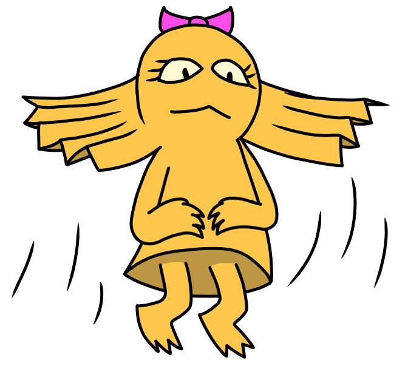
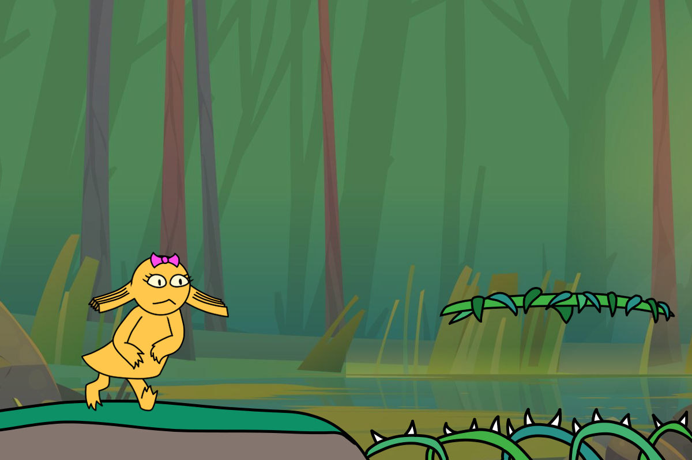
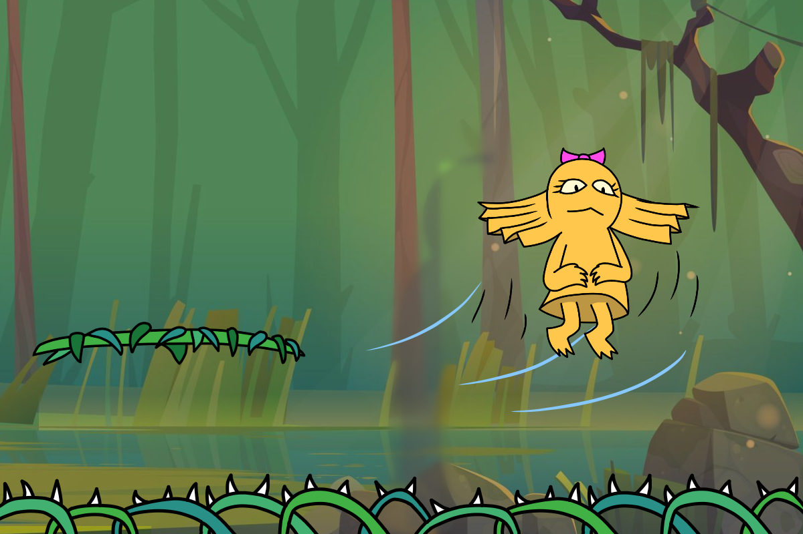

Lola Rides the Wind
- Take to the skies in a floaty platformer as you explore nature!
- As the wind blows, use it to glide through areas and evade obstacles.
- Explore the environment to your heart's content as you gather the resources necessary to escape.
Genre(s)
Adventure, Casual, Metroidvania, Open-World, Platform, Simulation
Platform
Mobile-friendly
Story
- It's migration season! As the swamp is swept with a windy monsoon, Lola the frilled lizard must migrate to a warmer environment.
- Lola aspires to take to the sky and ride the wind, but is confined to running and gliding with her frills.
- To migrate, she plans to assemble a pinwheel from the resources found in the swamp that will let her ride the wind to reach the desert.
Aesthetics
- Graphical style: Retro cartoon
- Music: Ambient, 8-bit, Looped
- Sound: Background, impact-based, natural
Gameplay
Mechanics
The player will have access to basic horizontal movement and jumping with the primary ability to slow their falling speed in mid-air. They will also be able to use objects in the overworld, such as wind fields, to boost their height and access harder to reach platforms. If possible, extra abilities may be integrated to allow access to initially inaccessible areas.
Controls
- Desktop: Arrows, WASD
- Mobile (hypothetical): Left/Right on-screen buttons, Jump/Slow-fall button.
Onboarding
The player will be given instructions on the controls from the main menu.
Player Learning
As abilities are accrued, tougher platforming challenges will be present in later areas that make use of these abilities. The player will need to know the right way to use these abilities for such challenges, sometimes involving a secondary effect of said ability.
Gameplay Mockup Images
 
About the developer
Andrew S. Hernandez is a Second-Year Game Design & Development Major at RIT. His hobbies and skills include programming, simplistic digital art, and electronic music.